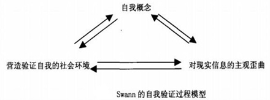

失败，不是个讨人喜欢的词呦。人们谈起它，唯恐避之不及，赶紧说：呸呸！人们遇上它，叫苦不迭，连声哀叹自己"命不好"。可是，会不会有许多失败的因子已经悄然潜伏在我们的潜意识中呢？
作为一名临近毕业的大学生，我是有多担心自己的工作啊！每天上课、自习、考证、实习。似乎每件事都与未来有关。可分明一边还在焦虑着：现在就业那么难，未来是否会有一个岗位是属于我的？求职失败了我该肿么办？ 难道我这真的是"未老先衰"的节奏啊……
别急，听我往下说。事实上，还有许多人如同我一样，提前预想到自己可能的"下场"，他们或许是焦躁难耐的大学生；或许是进退维谷的创业者；或许是压力山大的白领一族；更有可能是浮躁社会里的你你我我。担心失败的大有人在，单听他们的诉说，就让人慌了阵脚。我不禁想到：担心什么来什么。我们选择的是不安，结局亦是不安；我们选择把失败作为假想敌。结局就不言而喻，亦是失败！
哎呀糟糕！开篇我就讲了这么多"失败"，接下来的运气肯定不会好了……事实果真是这样吗？听起来好像失败来得如此简单。有人说，这世界上存在一种"吸引力"法则，我们可以这样理解：你生命中所发生的一切，都是你吸引来的。这样说你会不会感觉心安呢？因为若是这样，成功也变得相当简单，你时常想着它念着它，没事把它放心里意淫千百次，成功它就真的追着你来了！
成功与失败从来都不是耍大牌的大腕，而是挥之即来呼之即去的小喽啰！
一、担心什么来什么（心理暗示的力量）
澳大利亚一名电视工作者 朗达·拜恩，于2008年出版了一本名为 The Secret（《秘密》）的书，曾引起巨大反响。这本书最核心的内容就是阐述了一个法则，即 "吸引力法则"，大意是说"心中所想之事越发强烈，似乎就越容易实现"，这无疑会让人们联想到永远抱有巨奖梦的彩民们。
这本书阐述的"吸引力法则"基本原理是这样的：人类所有的思维活动，都会产生某种特定的频率（脑电波），而这种频率就好比杜鹃用于求爱的信号、蝙蝠用来探路的超声波。它会吸引同样的频率，引发共振，从而将我们思维活动中所涉及到的任何事物吸引到我们的面前。
据说有些彩民将自己买彩票中奖的幸运归结为"自己的信念足够强大"，好了，先别慨叹"心想事成"的力量之强大了。不管它是"吸引力法则"也好，"心理暗示"也好，作为相反的例子，我们越是担心失败，脑中的磁场就会充分调动周围的资源，将那些与失败相关的，充满负面思维的事物吸引至我们眼前。然后我们面对着它们，就好像面对着久久未见的眼熟人儿，既熟悉又陌生。因为担心失败，大脑就更关注失败，会想到很多和失败相关的事情，如失败后的各种后果。因为大脑的思考范围有限，这么多心思放在"担心"上，就没有足够能量来考虑解决问题的办法，自然没那么多精力去做或许能真正"促进成功"的事情，失败几率自然更大。
二、墨菲定律的启示（心理倾向的作用）
"墨菲定律"（Murphy's Law）：事情往往会向你所想到的不好的方向发展，只要有这个可能性。比如你衣袋里有两把钥匙，一把是你房间的，一把是汽车的；如果你现在想拿出车钥匙，会发生什么？是的，你往往是拿出了房间钥匙。这就是著名的"墨菲定律"，也叫"倒霉蛋定律"。根据它，我们得知：
任何事都没有表面看起来那么简单；
所有的事都会比你预计的时间长；
会出错的事总会出错；
如果你担心某种情况发生，那么它就更有可能发生。
我们都有这样的体会，如果在街上准备拦一辆车去赴一个时间紧迫的约会，你会发现街上所有的出租车不是有客就是根本不搭理你，而当你不需要租车的时候，却发现有很多空车在你周围游弋，只待你的一扬手，车随时就停在你的面前。如果一个月前在浴室打碎镜子，尽管仔细检查和冲刷，也不敢光着脚走路，等过了一段时间确定没有危险了，不幸的事还是照样发生，你还是被碎玻璃扎了脚。
在运动场上，我们也不乏看见这样的例子。美国射手埃蒙斯，在2004年雅典奥运会男子步枪三姿决赛，前九枪领先对手3环之多，最后一枪鬼使神差地把子弹打到了别人的靶子上。2008年北京奥运会男子50米步枪3x40决赛，埃蒙斯在倒数第二轮领先将近4环，金牌几乎唾手可得的情况下，重演了雅典的严重失误，最后一轮仅打出了4.4环。2012年伦敦奥运会射击项目的最后一个比赛日，男子50米步枪三姿决赛，埃蒙斯再次折在"最后一枪"。
也许他与成功只相差一步。但心里若对比赛结果有那么一点点介意，便草木皆兵了罢。当我们在惋惜埃蒙斯的三度梦碎的时候，是否会从中得到一些启示呢？
三、人的"自我验证"机制（心理预期的作用）
"安全感"是大多数人所追求的。我们去幻想失败，也许没有其他的想法，只是为了证实自己心中所想，以达到心理预期，也就是所谓的安全感。我们在接受外界信息的时候往往都倾向于接受能够保持和强化自我概念的信息，来增强确定性，消除不确定性所带来的心理不安感。

根据swann的理论，有积极自我概念的人，认为自己会成功的人，他会选择营造验证自我的社会环境：（1）他会选择和成功的人交往；（2）他会在别人面前展示成功者的面貌；（3）采用能够验证自己成功的交往策略。而且会对现实信息进去主观歪曲：（1）选择性地注意那些成功的事迹；（2）选择性的对事情解释，失败的事情都能被解释为成功的事。
用个例子来说明下：我准备了很久的考试，却每次都是考到我没有背的那些题目呢？原因可以解释为：
1、反正会漏背，背不完，我就挑选几道可能考的题目（消极的策略）
2、实际上有很多次刚好考到他背的题目，但他却总是记得那些漏背的考试，因为这是让人沮丧的情况所以让人印象深刻（选择性注意）
3、实际上不是漏背，只是没背熟，他为了证明自己的倒霉而不是记忆力不好，解释为漏背了（选择性解释）
所以，为什么越担心失败就越容易失败呢？因为这种担心失败的不积极的自我概念，会让我们展现出失败者的面貌，进而激发我们采取退缩、回避等消极策略。在面对问题时，消极策略让我们不能倾尽全力去付出，一旦结果不如人意将再次强化自己会失败的自我概念。就算在整件事当中有些事是成功的，但是我们往往选择性地忘记成功，反而牢牢地记住自己的失败，并深信不疑，觉得自己的成功是侥幸，失败是很经常和容易发生的（选择性歪曲）。
说到这里，我想大家都知道了这个问题的答案了。原来我们心心念念的那个"情人"是"失败"呀！什么，你并不爱它？那么，为什么不从容地向成功挥一挥手，展示我们对它的热切渴望？成功，从来都不是大腕，它就是你身边一打杂儿的伙计，你向它招一招手，它就屁颠屁颠儿地跟来了，当然你得诚心诚意呼唤它，用100%努力去召唤它，这样它定不会背叛你。
PS. 这一招在 Hard 难度以上的现实世界效果会打折扣。但起码是把成功拉向自己，而不是傲娇地一把把它推开。